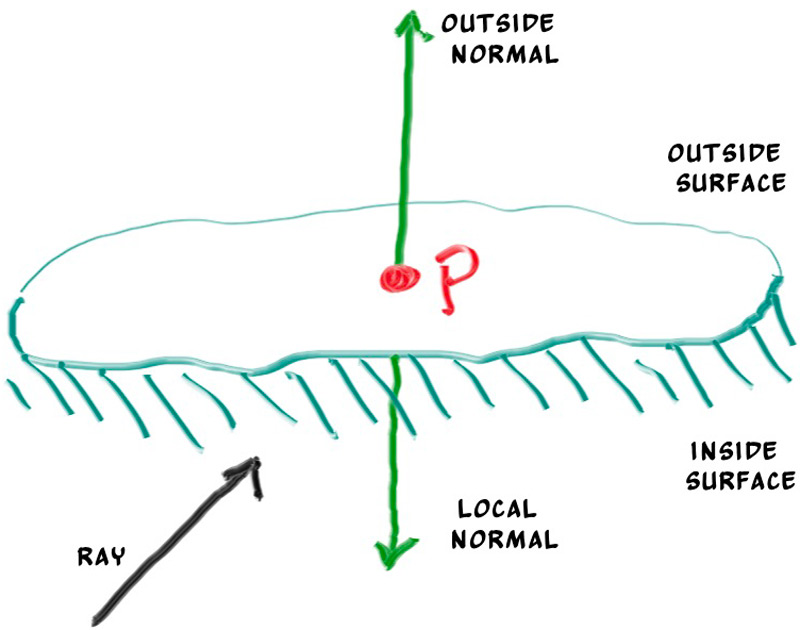

Front Faces Versus Back Faces
The second design decision for normals is whether they should always point out. At present, the normal found will always be in the direction of the center to the intersection point (the normal points out). If the ray intersects the sphere from the outside, the normal points against the ray. If the ray intersects the sphere from the inside, the normal (which always points out) points with the ray. Alternatively, we can have the normal always point against the ray. If the ray is outside the sphere, the normal will point outward, but if the ray is inside the sphere, the normal will point inward.

Figure 7: Possible directions for sphere surface-normal geometry
We need to choose one of these possibilities because we will eventually want to determine which side of the surface that the ray is coming from. This is important for objects that are rendered differently on each side, like the text on a two-sided sheet of paper, or for objects that have an inside and an outside, like glass balls.
If we decide to have the normals always point out, then we will need to determine which side the ray is on when we color it. We can figure this out by comparing the ray with the normal. If the ray and the normal face in the same direction, the ray is inside the object, if the ray and the normal face in the opposite direction, then the ray is outside the object. This can be determined by taking the dot product of the two vectors, where if their dot is positive, the ray is inside the sphere.
use crate::{
ray::Ray,
vec3::{Point3, Vec3, dot},
};
#[derive(Debug, Default, Clone, Copy)]
pub struct HitRecord {
pub p: Point3,
pub normal: Vec3,
pub t: f64,
pub front_face: bool,
}
impl HitRecord {
pub fn set_face_normal(&mut self, r: Ray, outward_normal: Vec3) {
// Sets the hit record normal vector.
// NOTE: the parameter `outward_normal` is assumed to have unit length.
let normal;
let front_face;
if dot(r.direction(), outward_normal) > 0.0 {
// ray is inside the sphere
normal = -outward_normal;
front_face = false;
} else {
// ray is outside the sphere
normal = outward_normal;
front_face = true;
}
self.front_face = front_face;
self.normal = normal;
}
}
pub trait Hittable {
fn hit(&self, r: Ray, ray_tmin: f64, ray_tmax: f64) -> Option<HitRecord>;
}Listing 17: Comparing the ray and the normal
If we decide to have the normals always point against the ray, we won't be able to use the dot product to determine which side of the surface the ray is on. Instead, we would need to store that information:
use crate::{
ray::Ray,
vec3::{Point3, Vec3, dot},
};
#[derive(Debug, Default, Clone, Copy)]
pub struct HitRecord {
pub p: Point3,
pub normal: Vec3,
pub t: f64,
pub front_face: bool,
}
impl HitRecord {
pub fn set_face_normal(&mut self, r: Ray, outward_normal: Vec3) {
// Sets the hit record normal vector.
// NOTE: the parameter `outward_normal` is assumed to have unit length.
let normal;
let front_face;
if dot(r.direction(), outward_normal) > 0.0 {
// ray is inside the sphere
normal = -outward_normal;
front_face = false;
} else {
// ray is outside the sphere
normal = outward_normal;
front_face = true;
}
self.front_face = front_face;
self.normal = normal;
}
}
pub trait Hittable {
fn hit(&self, r: Ray, ray_tmin: f64, ray_tmax: f64) -> Option<HitRecord>;
}Listing 18: Remembering the side of the surface
We can set things up so that normals always point “outward” from the surface, or always point against the incident ray. This decision is determined by whether you want to determine the side of the surface at the time of geometry intersection or at the time of coloring. In this book we have more material types than we have geometry types, so we'll go for less work and put the determination at geometry time. This is simply a matter of preference, and you'll see both implementations in the literature.
We add the front_face bool to the hit_record class. We'll also add a function to solve this calculation for us: set_face_normal(). For convenience we will assume that the vector passed to the new set_face_normal() function is of unit length. We could always normalize the parameter explicitly, but it's more efficient if the geometry code does this, as it's usually easier when you know more about the specific geometry.
diff --git a/src/hittable.rs b/src/hittable.rs
index b8a3fcf..8ced826 100644
--- a/src/hittable.rs
+++ b/src/hittable.rs
@@ -1,15 +1,30 @@
use crate::{
ray::Ray,
- vec3::{Point3, Vec3},
+ vec3::{Point3, Vec3, dot},
};
#[derive(Debug, Default, Clone, Copy)]
pub struct HitRecord {
pub p: Point3,
pub normal: Vec3,
pub t: f64,
+ pub front_face: bool,
+}
+
+impl HitRecord {
+ pub fn set_face_normal(&mut self, r: Ray, outward_normal: Vec3) {
+ // Sets the hit record normal vector.
+ // NOTE: the parameter `outward_normal` is assumed to have unit length.
+
+ self.front_face = dot(r.direction(), outward_normal) < 0.0;
+ self.normal = if self.front_face {
+ outward_normal
+ } else {
+ -outward_normal
+ };
+ }
}
pub trait Hittable {
fn hit(&self, r: Ray, ray_tmin: f64, ray_tmax: f64) -> Option<HitRecord>;
}Listing 19: [hittable.rs] Adding front-face tracking to hit_record
And then we add the surface side determination to the class:
diff --git a/src/sphere.rs b/src/sphere.rs
index aa651e9..86d3cbb 100644
--- a/src/sphere.rs
+++ b/src/sphere.rs
@@ -1,56 +1,57 @@
use crate::{
hittable::{HitRecord, Hittable},
ray::Ray,
vec3::{Point3, dot},
};
#[derive(Debug, Clone, Copy)]
pub struct Sphere {
center: Point3,
radius: f64,
}
impl Sphere {
pub fn new(center: Point3, radius: f64) -> Self {
Self {
center,
radius: f64::max(0.0, radius),
}
}
}
impl Hittable for Sphere {
fn hit(&self, r: Ray, ray_tmin: f64, ray_tmax: f64) -> Option<HitRecord> {
let oc = self.center - r.origin();
let a = r.direction().length_squared();
let h = dot(r.direction(), oc);
let c = oc.length_squared() - self.radius * self.radius;
let discriminant = h * h - a * c;
if discriminant < 0.0 {
return None;
}
let sqrtd = f64::sqrt(discriminant);
// Find the nearest root that lies in the acceptable range.
let mut root = (h - sqrtd) / a;
if root <= ray_tmin || ray_tmax <= root {
root = (h + sqrtd) / a;
if root <= ray_tmin || ray_tmax <= root {
return None;
}
}
let t = root;
let p = r.at(t);
- let rec = HitRecord {
+ let mut rec = HitRecord {
t,
p,
- normal: (p - self.center) / self.radius,
..Default::default()
};
+ let outward_normal = (p - self.center) / self.radius;
+ rec.set_face_normal(r, outward_normal);
Some(rec)
}
}Listing 20: [sphere.rs] The sphere class with normal determination